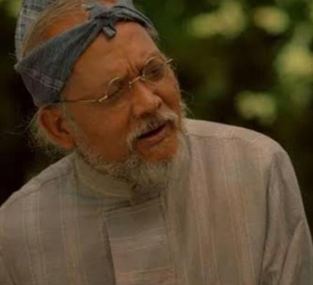

| CHARACTERS IN NOLI ME TANGERE |
|
Juan Crisóstomo Ibarra y Magsalin |
- Main Character
- Wealthy young man of Spanish and Filipino descent
- Studied abroad in Europe for 7 years
- Wishes to build a school without religious influences
|
|
María Clara de Los Santos y Alba |
- Main Character
- Wealthy young woman of Spanish and Filipino descent
- Stayed in Beaterio de Santa Clara for 7 years
- Predominantly seen as the ideal Filipino woman
|
|
Don Santíago de los Santos |
- Commonly known as Kapitán Tiago
- Legal father of María Clara
- Son of a wealthy trader in Malabon
- Owns numerous properties in Pampanga, Laguna, and San Diego
|
|
Don Rafael Ibarra |
- Father of Crisóstomo
- Declared a heretic due to not attending confessions
- Accused of murder
- Died due to stress in his cell
|
|
Dámaso Verdolagas |
- A Spanish Franciscan friar living in the Philippines for 23 years
- A shameless loudmouth and snobbish, ruthless and judgemental extrovert
- Godfather of María Clara
- Biological father of María Clara
|
|
Bernardo Salvi |
- A serious and committed Spanish friar who takes over Father Dámaso’s post in San Diego as the town’s priest
- Often at odds with the town’s military ensign (Alperes)
- Asserts his influence by engineering behind-the-scenes plans to defame his enemies
- In love with María Clara
|
|  |
Don Anastacio |
- An old man who used to study philosophy and who prefers secular knowledge to Catholicism
- Called a "Madman" by the pious townspeople
- Hopes that Ibarra will succeed in building a school that is independent of the church
- An extreme representation of what it is to live without caring what other people think
|
|
Eliás |
- An outlaw and vagabond revolutionary who resents the power the Catholic church and Spanish government have over the Philippines
- Vowed to protect Ibarra after the man saved his life
- In a band of disenchanted revolutionaries who want to retaliate against the abusive Civil Guard that empowers the church and oppresses the people it claims to govern
- Believes that nothing productive will come of working within the existing power structures since the church and government are both so corrupt and apathetic when it comes to actually improving the Philippines
|
|
Crispín |
- A very young boy studying to be a sexton
- Works tirelessly to send money home to their mother
- Falsely accused of stealing money from the church
- Disappeared after being beaten severely by the sexton
|
|
Basilio |
- Crispín’s older brother
- Training to be a sexton
- Searches for his brother tirelessly
- Escaped from the Civil Guard and found refuge in the forest
|
|
Narcisa |
- Married to the man named Pedro and the mother of Basilio and Crispín
- Was arrested but was pardoned later by the Alperes
- Grew insane as she could not find her children
- Died after seeing Basilio
|
|
Doctor Tiburcio de Espadaña |
- A Spaniard who speaks with a stutter and looks significantly older than his thirty-five years
- Came to the Philippines as a customs officer but was dismissed upon his arrival
- He travelled to the Philippines' rural regions to practice medicine despite having no formal medical training
- Thought as one of the best doctors because he charges a lot of money
|
|
La Doctora Victorina de los Reyes de Espadaña |
- A Filipina woman married to Doctor Tiburcio
- Cares mostly about her image as a beautiful and admired socialite even though she is actually past her prime
- She is only in her thirties but looks much older and she quickly adopts the latest trends
- Often pushes her husband into doing things in her favor
|
|
Doña Consolación |
- Once worked as a laundry woman
- Married to the Alperes
- A brutal, vulgar partner who pretends to not remember her native language, Tagalog, and instead speaks very bad Spanish.
- Rivals with Doña Victorina but has a lot in common
|
|
Alperes |
- A Spaniard in charge of the Civil Guard in San Diego
- Has a bitter relationship with Father Salví
- Enforces curfews that make it difficult for the citizens of San Diego to attend church at the proper times
- Given to excessive drinking and unnecessary displays of power
|
|
Tiya Isabel |
- Cousin of Kapitán Tiago
- Raised María Clara after the death of her mother
|